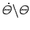
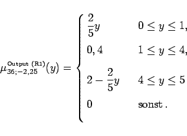
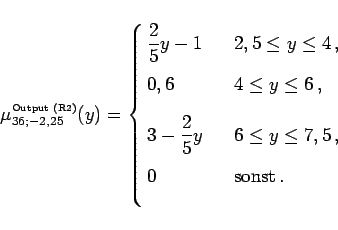

Inhalt Index DeskTop Bronstein

 Algebra und Diskrete Mathematik Fuzzy-Logik Wissensbasierte Fuzzy-Systeme Kognitive Systeme
Algebra und Diskrete Mathematik Fuzzy-Logik Wissensbasierte Fuzzy-Systeme Kognitive Systeme


Von den gemäß Tabelle 49 möglichen Regeln (7 x 7) sind 19 praxisrelevant, und von diesen werden die folgenden beiden Regeln R1 und R2 betrachtet.
|  | ng | nm | nk | eN | pk | pm | pg |
| ng | pk | pg | |||||
| nm | pm | ||||||
| nk | nm | nk | pk | ||||
| eN | ng | nm | nk | eN | pk | pm | pg |
| pk | nk | pk | pm | ||||
| pm | nm | ||||||
| pg | ng | nk |
|  | (5.417) |
|  | (5.418) |